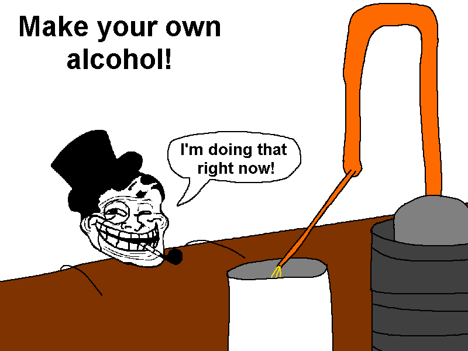

S.C.B.C™ Patented Super Duper Hydrometer 3000
Use this to calculate yer brews. Both calculators are rounded to 2 decimal places. A glossary for dummies is below.
Glossary for Dummies
-
Bricks
Uses sucrose level to calculate ABV. Measured at a 1/100 scale, as in 1 gram of sucrose per 100 grams of alcohol solution. -
Potential ABV%
Uses sugar amount to determine potential alcohol amount when all sugar is used up during brewing process. Calculated via initial reading - finished reading, e.g 12% Pot. ABV brewed down to 1% Pot. ABV would net you a 11% ABV. -
Specific Gravity
Uses the density of distilled water to calculate ABV. Values below 1 mean higher alcohol content/less dissolved sugar, while values above 1 mean lower alcohol content/more dissolved sugar.
S.C.B.C™ Patented Super Duper Mixer Calculator 3001
For mixing mixers.
Shows the alcohol content of your mixer after adding spirits to it. Input the Spirit's ABV, amount and how big your glass is.
